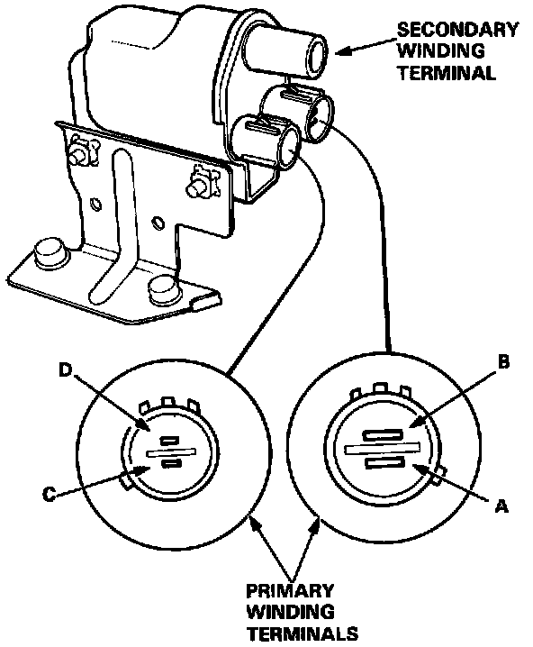
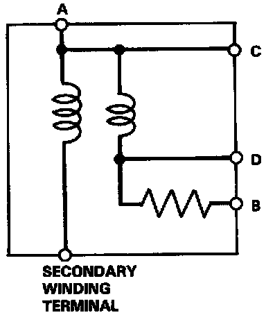

Ignition Coil Resistance Test


1. With the ignition switch OFF, disconnect the primary connectors and the coil wire.
2. Using an ohmmeter, measure resistance between the terminals. Replace the coil if the resistance is not within specifications.
NOTE: Resistance will vary with the coil temperature; specifications are at 20°C (7O°F).
Primary Winding Resistance
(between the A and D terminals):
0.3 - 0.4 ohms
Secondary Winding Resistance
(between the A and secondary winding terminals):
9,040 - 13,560 ohms
Resistance between the B and D terminals:
2,090 - 2,310 ohms
3. Check for continuity between the A and C terminals.
Replace the coil if there is no continuity.